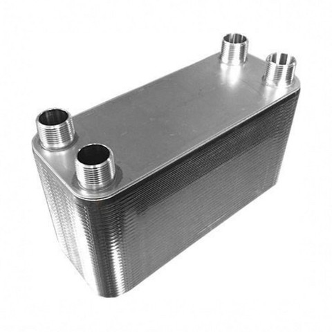

Теплообменник-разделитель для чиллера
Пластинчатый теплообменник как разделитель контуров чиллера: гидравлическое разделение машинного и потребительского контуров холодоснабжения, гликоль/вода.
Пластинчатый теплообменник разделяет контур чиллера и контур потребителей холода, защищая дорогостоящую холодильную машину и упрощая эксплуатацию системы холодоснабжения.

Задача
Прямое подключение разветвлённой сети потребителей к чиллеру увеличивает объём и загрязнённость контура машины, усложняет гидравлику и повышает риск для испарителя. Нужна развязка машинного и распределительного контуров.
Решение
Устанавливается пластинчатый теплообменник-разделитель: первичный контур с чиллером (часто гликолевый) и вторичный контур потребителей. Это стабилизирует работу чиллера, защищает испаритель, упрощает обслуживание и позволяет применять разные среды в контурах. Для холодильных режимов подбирается паяный или разборный аппарат под отрицательные температуры.
Ориентировочные параметры подбора
| Параметр | Значение |
|---|---|
| Холодопроизводительность | от 10 кВт до нескольких МВт |
| Среды | вода, гликоли, рассолы |
| Температуры | режимы 7/12 °C, −5/0 °C и ниже |
| Давление | до 16–25 бар |
| Тип аппарата | паяный / разборный |
Почему Cooling Consult
- Подбор под отрицательные температуры и гликоли
- Защита испарителя и стабильная работа чиллера
- Сравнение паяного и разборного решения по цене
- Поставка аппарата и комплектующих
Частые вопросы
Зачем чиллеру теплообменник-разделитель?
Он отделяет компактный машинный контур от большого контура потребителей, защищает испаритель и упрощает гидравлику и обслуживание.
Какой теплообменник выбрать для чиллера?
Для гликолевых контуров — разборный, для компактных систем и хладагентов — паяный; выбор зависит от температур, сред и давлений.
Можно ли использовать гликоль только в контуре чиллера?
Да, разделитель позволяет держать гликоль в машинном контуре, а у потребителей — воду, экономя на объёме гликоля.
Нужен подбор под вашу задачу?
Пришлите исходные данные — рассчитаем режим и предложим оборудование с ценой.
Подобрать оборудование